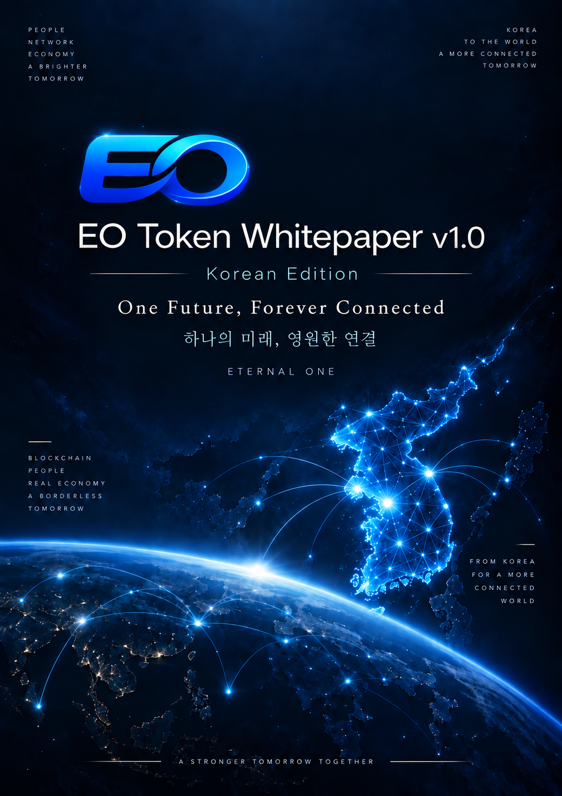
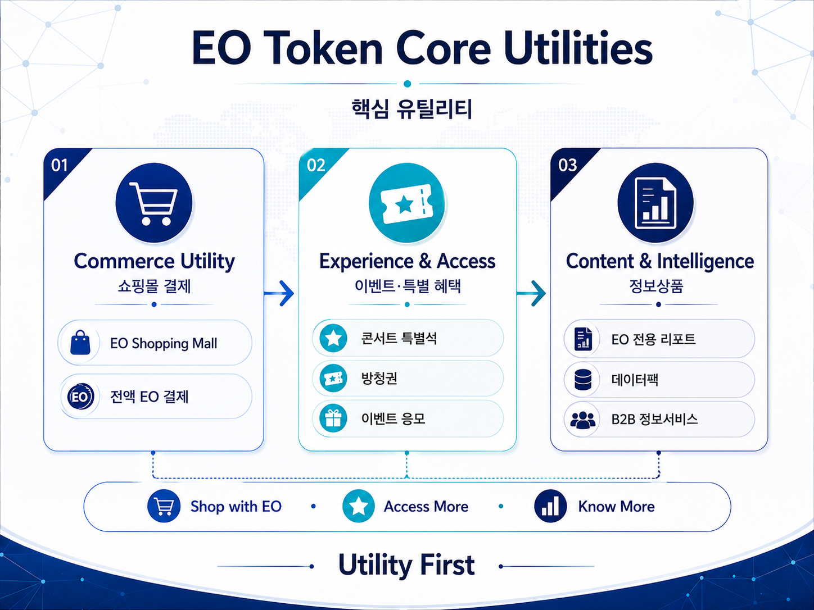
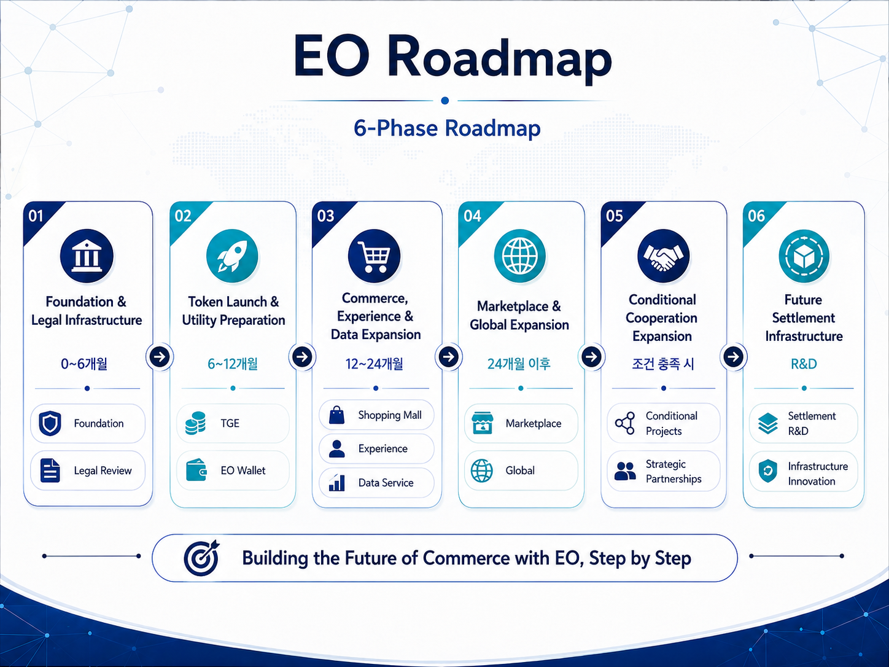

EO Token Whitepaper · Public Release v1.0
One Future,
Forever Connected
EO Token · Eternal One
하나의 미래, 영원한 연결
EO Token은 사람과 시장, 콘텐츠와 경험을 하나의 디지털 생태계로 연결하기 위해 설계된 Solana 기반 유틸리티 토큰입니다. 한국 시장에서 실사용 모델을 먼저 검증하고, 규제·시장 환경을 고려해 글로벌 커머스·콘텐츠·서비스 생태계로 확장하는 것을 목표로 합니다.
5.0B EOFixed Max Supply
30%Pre-Sale Allocation
650M EOInitial Circulation
SolanaSPL Token

REAL UTILITY
세 가지 핵심 유틸리티
EO Token의 핵심 가치는 단순 보유가 아니라 실제 서비스 이용에서 형성되도록 설계됩니다.
01 · COMMERCE
Commerce Utility
EO Shopping Mall에서 상품과 배송비를 포함한 주문 총액을 EO로 전액 결제하는 커머스 유틸리티입니다.
02 · EXPERIENCE
Experience & Access
콘서트 특별석, 방송 방청권, 이벤트 응모 및 한정 경험 등 서비스 접근권과 참여 기회를 연결합니다.
03 · INTELLIGENCE
Content & Intelligence
일부 EO 전용 리포트, 데이터팩 및 선공개 분석자료 등 정보상품을 EO로 이용하는 구조입니다.

TOKEN ECONOMY
고정 공급과 단계 배포
최대 공급량은 5,000,000,000 EO로 고정되며, 최초 발행 완료 후 Mint Authority와 Freeze Authority를 영구 폐기하는 구조로 설계합니다.

| 배분 | 비율 | 수량 |
|---|---|---|
| Ecosystem & Rewards | 25% | 1,250,000,000 EO |
| Foundation & Treasury | 15% | 750,000,000 EO |
| Team & Founders | 5% | 250,000,000 EO |
| Partnership & Marketing | 10% | 500,000,000 EO |
| Pre-Sale | 30% | 1,500,000,000 EO |
| Liquidity & Exchange | 10% | 500,000,000 EO |
| Strategic Reserve | 5% | 250,000,000 EO |
Pre-Sale Release Principle
TGE 500,000,000 EO → TGE+3개월 500,000,000 EO → TGE+6개월 500,000,000 EO. 초기 유통량은 사전판매 1차 배포 500M EO와 초기 유동성 150M EO를 합산한 650M EO(13%)를 기준으로 합니다.
TGE 500,000,000 EO → TGE+3개월 500,000,000 EO → TGE+6개월 500,000,000 EO. 초기 유통량은 사전판매 1차 배포 500M EO와 초기 유동성 150M EO를 합산한 650M EO(13%)를 기준으로 합니다.
ROADMAP
6단계 확장 로드맵
Foundation·Legal → Token Launch → Commerce/Data → Marketplace/Global → Conditional Cooperation → Future Settlement R&D 순으로 단계적 확장을 지향합니다.

WHITEPAPER
Public Release v1.0
공식 백서의 20개 챕터를 웹에서 바로 읽을 수 있습니다. PDF는 공식 배포·보관용 문서로 함께 제공합니다.
01Executive SummaryPublic Release v1.002Problem & OpportunityPublic Release v1.003Vision & Brand PhilosophyPublic Release v1.004Ecosystem Operating StructurePublic Release v1.005Media & Data Engine — 북한 NOWPublic Release v1.006EO Shopping Mall — Commerce LayerPublic Release v1.007Experience & Access UtilityPublic Release v1.008Content & Intelligence UtilityPublic Release v1.009EO Token Utility ArchitecturePublic Release v1.010Token EconomyPublic Release v1.011EO Foundation, Treasury & GovernancePublic Release v1.012Technology ArchitecturePublic Release v1.013Revenue & FundingPublic Release v1.014Korean Peninsula Peace Tourism BeltPublic Release v1.015Long-Term Expansion PortfolioPublic Release v1.016Policy AlignmentPublic Release v1.017RoadmapPublic Release v1.018Compliance & RiskPublic Release v1.019Team & PartnersPublic Release v1.020Disclaimer SummaryPublic Release v1.0
Important Notice
EO Token은 EO 생태계 내 서비스 이용을 위한 유틸리티 토큰으로 설계되며, 투자수익, 가격상승, 배당, 원금보장 또는 특정 금융수익을 약속하지 않습니다. 사업계획과 일정은 기술개발, 시장환경, 파트너십, 관련 법률·규제·제재·정부 승인 및 인허가 등에 따라 변경·지연 또는 중단될 수 있습니다.
EO Token은 EO 생태계 내 서비스 이용을 위한 유틸리티 토큰으로 설계되며, 투자수익, 가격상승, 배당, 원금보장 또는 특정 금융수익을 약속하지 않습니다. 사업계획과 일정은 기술개발, 시장환경, 파트너십, 관련 법률·규제·제재·정부 승인 및 인허가 등에 따라 변경·지연 또는 중단될 수 있습니다.